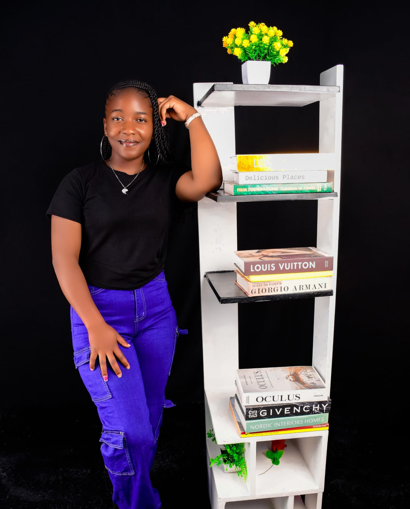
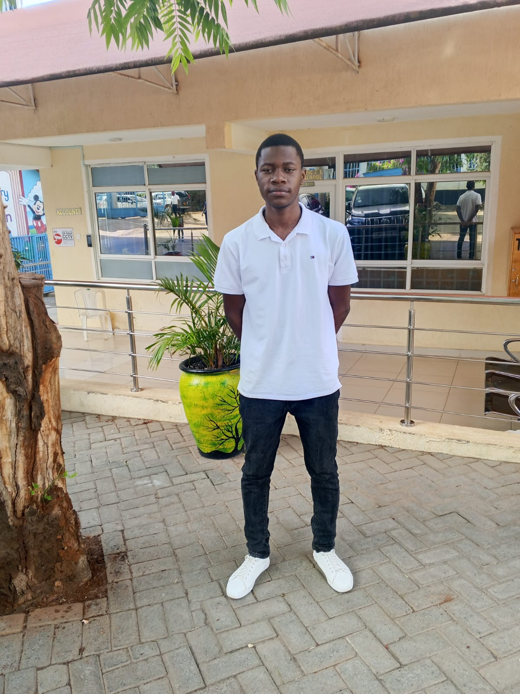

OUR STORY
Good food starts
with good people.
We're Amon and Shanice, the people behind Fast Food Restaurant. We started with a shared love of good food and a simple idea: bring delicious, affordable samosas to our community.
Today, that same care goes into everything we do. Fresh ingredients, satisfying flavours, and food that brings people together.